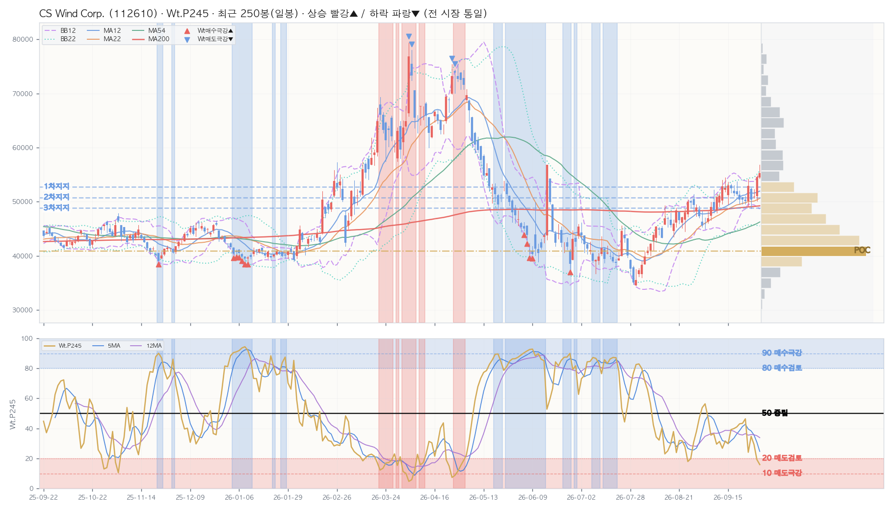

| 레벨 | 가격대 | 현재가 대비 | 거래비중 |
|---|---|---|---|
| ▲ 저항 — | 유효 매물대 없음 | ||
| ▼ 지지 1차 | 51,764~53,738 | -4.6% | 4.5% |
| ▼ 지지 2차 | 49,790~51,764 | -8.2% | 7.9% |
| ▼ 지지 3차 | 47,816~49,790 | -11.7% | 7.0% |
| 지표 | D 일봉 | W 주봉 | M 월봉 |
|---|---|---|---|
| Close | 55,300 | 55,300 | 55,300 |
| Chg% | ▲ +1.28% | ▲ +10.38% | ▲ +8.64% |
| SigNm | 25.1 | 25.6 | 34.8 |
| SigRk | 20.1 | 23.6 | 26.2 |
| PvN2 | 4 | 3 | 2 |
| WtAll | 18 | 38 | 25 |
nix_snapshot_market_temp_kr.json (2026-10-02 · 읽기 전용 크로스 참조)| Perf | Mac | Tcr.U | Tcr.D | Zc | BBs | PvN2 | Sts | Wt.P245 | SA.P245 | SA02.P245 | S122.P245 | S051.P245 | SU31.P245 | Inds.Sig | ||||||||||||||||||||||||||||||||||||||||||||||||||
|---|---|---|---|---|---|---|---|---|---|---|---|---|---|---|---|---|---|---|---|---|---|---|---|---|---|---|---|---|---|---|---|---|---|---|---|---|---|---|---|---|---|---|---|---|---|---|---|---|---|---|---|---|---|---|---|---|---|---|---|---|---|---|---|---|
| SigNm | SigRk | |||||||||||||||||||||||||||||||||||||||||||||||||||||||||||||||
| Date | T-Set | H | L | C | V | Chg% | DChg% | YTD | P5 | P12 | P16 | P22 | P54 | P120 | P245 | Cdl | 종합 | 단 | 중 | 장 | 5 | 12 | 22 | 54 | 5 | 12 | 22 | 54 | 12 | 22 | 54 | 12 | 22 | 54 | D | MA_Sts | C_Sts | EMC_Sts | .P | .J | Bar(P) | Ar | .P | .J | Bar(P) | Ar | .P | .J | Bar(P) | Ar | .P | .J | Bar(P) | Ar | .P | .J | Bar(P) | Ar | .P | .J | Bar(P) | Ar | D | D |
| 2026-10-02 | KS200 | 56,800 | 54,300 | 55,300 | 417.6K | +1.3 | +0.0 | +36.7 | +10.4 | +5.1 | +14.4 | +13.1 | +40.2 | -15.6 | +29.2 | 0 | 0 | 8 | 0 | -7 | 0.6 | 0.5 | 1.1 | 2.4 | 0.2 | 0.2 | 0.2 | 0.3 | 2.0 | 1.8 | 1.7 | 2.8 | 1.9 | 0.3 | +4 | 🟥🟥🟦🟥🟥🟥🟥🟥 | 🟥🟥🟥🟥🟥🟥🟥🟥 | 🟥🟥🟥🟥🟥🟥🟥🟥 | 15.9 | 🅰️ | ██ | ▼ | 7.0 | 🚫 | ▼ | 29.8 | 🔴 | ███ | ↔ | 6.0 | 🚫 | ▼ | 29.3 | 🔴 | ███ | ↔ | 22.2 | 🟥 | ██ | ▲ | 25.1 | 20.1 | ||
| 2026-10-01 | KS200 | 54,800 | 50,100 | 54,600 | 565.0K | +7.3 | +1.3 | +35.0 | +8.3 | +3.4 | +11.4 | +10.5 | +31.9 | -25.5 | +25.1 | -11 | 1 | 0 | 7 | -7 | 0.4 | 0.4 | 1.0 | 2.2 | 0.1 | 0.1 | 0.2 | 0.2 | 2.1 | 1.8 | 1.7 | 0.7 | 0 | 0 | +4 | 🟥🟥🟦🟥🟥🟥🟥🟥 | 🟥🟥🟥🟥🟥🟥🟥🟥 | 🟥🟥🟥🟥🟥🟥🟥🟥 | 19.3 | 🅰️ | ██ | ▼ | 22.4 | 🟥 | ██ | ↔ | 22.2 | 🟥 | ██ | ▼ | 26.3 | 🔴 | ███ | ↔ | 23.0 | 🟥 | ██ | ▼ | 24.1 | 🟥 | ███ | ▲ | 27.9 | 21.7 |
| 2026-09-30 | KS200 | 52,300 | 50,700 | 50,900 | 286.1K | +1.0 | +8.6 | +25.8 | +1.0 | -0.4 | +8.4 | +2.1 | +27.7 | -33.8 | +15.0 | -11 | 1 | 0 | 7 | -7 | 0.3 | 0.3 | 0.8 | 2.0 | 0.4 | 0.4 | 0.5 | 0.4 | -0.6 | 0.4 | 1.0 | 0 | 0 | 0 | 0 | 🟥🟥🟦🟥🟥🟥🟦🟦 | 🟥🟥🟥🟥🟥🟥🟦🟦 | 🟥🟥🟥🟥🟥🟥🟥🟦 | 29.4 | 🔴 | ███ | ▼ | 25.1 | 🔴 | ███ | ↔ | 24.8 | 🟥 | ███ | ▼ | 27.4 | 🔴 | ███ | ↔ | 27.2 | 🔴 | ███ | ▼ | 23.0 | 🟥 | ██ | ▲ | 49.7 | 42.8 |
| 2026-09-29 | KS200 | 52,600 | 48,750 | 50,400 | 398.1K | -4.7 | +9.7 | +24.6 | -1.9 | -0.8 | +9.8 | +0.8 | +28.6 | -22.3 | +13.4 | 7 | 1 | 0 | 7 | -7 | 0.2 | 0.2 | 0.7 | 2.0 | 0.2 | 0.4 | 0.4 | 0.4 | -1.1 | 0.2 | 1.0 | -1.4 | 0 | 0 | 0 | 🟥🟥🟦🟥🟥🟥🟦🟦 | 🟥🟥🟥🟥🟥🟥🟦🟦 | 🟥🟥🟥🟥🟥🟥🟦🟦 | 34.8 | 🟠 | ████ | ↔ | 35.1 | 🔶 | ████ | ↔ | 27.9 | 🔴 | ███ | ▼ | 43.0 | 🔸 | █████ | ▲ | 30.4 | 🟠 | ███ | ▼ | 15.8 | 🅰️ | ██ | ▲ | 50.9 | 43.3 |
| 2026-09-28 | KS200 | 54,200 | 49,200 | 52,900 | 459.8K | +5.6 | +4.5 | +30.8 | +2.5 | +9.4 | +16.1 | +10.1 | +35.5 | -17.0 | +21.1 | -10 | 1 | 0 | 7 | -7 | 0.3 | 0.5 | 0.9 | 2.2 | 0.2 | 0.3 | 0.3 | 0.3 | 1.2 | 1.3 | 1.5 | -0.7 | 0 | 0 | 0 | 🟥🟥🟦🟥🟥🟥🟦🟥 | 🟥🟥🟥🟥🟥🟥🟥🟥 | 🟥🟥🟥🟥🟥🟥🟥🟥 | 24.1 | 🟥 | ███ | ↔ | 22.0 | 🟥 | ██ | ↔ | 32.0 | 🟠 | ████ | ▼ | 19.8 | 🅰️ | ██ | ↔ | 34.0 | 🟠 | ████ | ▼ | 15.4 | 🅰️ | █ | ▲ | 32.6 | 28.1 |
| 2026-09-23 | KS200 | 51,000 | 49,600 | 50,100 | 193.7K | -0.6 | +10.4 | +23.9 | -4.6 | +2.2 | +5.9 | +6.3 | +22.0 | -15.9 | +12.5 | 4 | 1 | 0 | 7 | -7 | 0.2 | 0.5 | 0.9 | 2.1 | 1.0 | 0.8 | 0.6 | 0.6 | -0.9 | 0.1 | 1.0 | 0 | 0 | 0 | 0 | 🟥🟥🟦🟦🟥🟥🟦🟦 | 🟥🟥🟦🟥🟥🟥🟦🟦 | 🟥🟥🟥🟥🟥🟥🟦🟦 | 46.4 | 📉 | ██████ | ▲ | 51.7 | 📈 | ██████ | ▲ | 34.1 | 🟠 | ████ | ▼ | 57.0 | 🔹 | ███████ | ▲ | 35.4 | 🔶 | ████ | ▼ | 14.8 | 🆘 | █ | ▲ | 57.0 | 50.2 |
| 2026-09-22 | KS200 | 50,800 | 49,600 | 50,400 | 215.1K | +0.0 | +9.7 | +24.6 | -4.9 | +7.3 | +3.1 | +8.3 | +21.9 | -20.1 | +13.1 | -4 | 1 | 0 | 7 | -7 | 0.2 | 0.7 | 0.8 | 2.0 | 0.7 | 0.8 | 0.5 | 0.5 | -0.5 | 0.3 | 1.1 | 0 | 0 | 0 | 0 | 🟥🟥🟦🟦🟥🟥🟥🟦 | 🟥🟥🟦🟥🟥🟥🟦🟦 | 🟥🟥🟥🟥🟥🟥🟦🟦 | 43.4 | 🔸 | █████ | ▲ | 40.4 | 🔸 | █████ | ▲ | 41.2 | 🔸 | █████ | ↔ | 45.4 | 📉 | █████ | ▲ | 41.3 | 🔸 | █████ | ↔ | 15.6 | 🅰️ | ██ | ▲ | 54.2 | 46.9 |
| 2026-09-21 | KS200 | 52,000 | 49,550 | 50,400 | 243.7K | -1.9 | +9.7 | +24.6 | -4.2 | +9.8 | +2.0 | +4.1 | +19.7 | -16.3 | +14.2 | 2 | 1 | 0 | 7 | -7 | 0.2 | 0.7 | 0.7 | 2.0 | 0.4 | 0.5 | 0.4 | 0.5 | -0.3 | 0.4 | 1.1 | 0 | 0 | 0 | 0 | 🟥🟥🟦🟦🟥🟥🟥🟦 | 🟥🟥🟦🟥🟥🟥🟦🟦 | 🟥🟥🟥🟥🟥🟥🟦🟦 | 43.1 | 🔸 | █████ | ▲ | 35.8 | 🔶 | ████ | ↔ | 46.7 | 📉 | ██████ | ↔ | 38.2 | 🔶 | ████ | ▲ | 46.7 | 📉 | ██████ | ↔ | 15.5 | 🅰️ | ██ | ↔ | 53.0 | 45.6 |
| 2026-09-18 | KS200 | 53,700 | 51,100 | 51,400 | 422.9K | -0.4 | +7.6 | +27.1 | -2.7 | +12.8 | +3.1 | +11.9 | +17.5 | -17.2 | +16.6 | 0 | 1 | 0 | 7 | -7 | 0.3 | 0.9 | 0.8 | 2.0 | 0.4 | 0.4 | 0.3 | 0.3 | 0.4 | 0.9 | 1.4 | 0 | 0 | 0 | 0 | 🟥🟥🟦🟦🟥🟥🟥🟦 | 🟥🟥🟥🟥🟥🟥🟥🟦 | 🟥🟥🟥🟥🟥🟥🟥🟦 | 41.0 | 🔸 | █████ | ↔ | 33.2 | 🟠 | ████ | ↔ | 53.8 | 📈 | ██████ | ↔ | 40.1 | 🔸 | █████ | ↔ | 51.3 | 📈 | ██████ | ↔ | 13.6 | 🆘 | █ | ↔ | 45.8 | 36.2 |
| 2026-09-17 | KS200 | 53,000 | 51,100 | 51,600 | 231.7K | -1.7 | +7.2 | +27.6 | +1.0 | +9.1 | +3.2 | +12.9 | +13.7 | -18.5 | +15.1 | -3 | 1 | 0 | 7 | -7 | 0.5 | 0.9 | 0.9 | 2.0 | 0.5 | 0.3 | 0.3 | 0.3 | 0.6 | 1.0 | 1.5 | 0 | 0 | 0 | 0 | 🟥🟥🟦🟦🟥🟥🟥🟦 | 🟥🟥🟥🟥🟥🟥🟥🟦 | 🟥🟥🟥🟥🟥🟥🟥🟦 | 39.9 | 🔶 | █████ | ↔ | 23.8 | 🟥 | ███ | ↔ | 58.8 | 🔹 | ███████ | ↔ | 26.9 | 🔴 | ███ | ↔ | 56.2 | 🔹 | ███████ | ↔ | 8.9 | 🚫 | █ | ↔ | 46.6 | 38.7 |
| 2026-09-16 | KS200 | 53,300 | 51,700 | 52,500 | 225.1K | -0.9 | +5.3 | +29.8 | +3.3 | +7.4 | +9.3 | +12.1 | +23.4 | -14.5 | +16.3 | 8 | 1 | 0 | 7 | -7 | 0.5 | 0.9 | 1.0 | 2.1 | 0.2 | 0.2 | 0.2 | 0.2 | 1.1 | 1.5 | 1.7 | 0 | 0 | 0 | 0 | 🟥🟥🟦🟦🟥🟥🟥🟥 | 🟥🟥🟥🟥🟥🟥🟥🟥 | 🟥🟥🟥🟥🟥🟥🟥🟥 | 39.2 | 🔶 | █████ | ↔ | 22.6 | 🟥 | ██ | ↔ | 62.8 | 🔷 | ████████ | ▲ | 27.3 | 🔴 | ███ | ↔ | 59.2 | 🔹 | ███████ | ▲ | 6.8 | 🚫 | ▼ | 43.0 | 34.4 | |
| 2026-09-15 | KS200 | 53,650 | 49,500 | 53,000 | 496.5K | +0.8 | +4.3 | +31.0 | +9.6 | +7.3 | +12.4 | +13.0 | +23.0 | -16.3 | +19.1 | 0 | 1 | 0 | 7 | -7 | 0.5 | 0.7 | 0.9 | 2.1 | 0.2 | 0.2 | 0.2 | 0.2 | 1.4 | 1.9 | 1.9 | 0 | 0.8 | 0.7 | +4 | 🟥🟥🟦🟦🟥🟥🟥🟥 | 🟥🟥🟥🟥🟥🟥🟥🟥 | 🟥🟥🟥🟥🟥🟥🟥🟥 | 29.8 | 🔴 | ███ | ▼ | 9.8 | 🚫 | █ | ▼ | 62.5 | 🔷 | ████████ | ▲ | 9.3 | 🚫 | █ | ▼ | 61.4 | 🔷 | ███████ | ▲ | 6.0 | 🚫 | ▼ | 28.1 | 25.3 | |
| 2026-09-14 | KS200 | 54,500 | 51,800 | 52,600 | 313.1K | -0.4 | +5.1 | +30.0 | +7.3 | +5.5 | +13.0 | +21.3 | +36.6 | -20.4 | +22.8 | 6 | 1 | 0 | 7 | -7 | 0.4 | 0.7 | 0.9 | 2.1 | 0.2 | 0.2 | 0.2 | 0.2 | 1.5 | 2.0 | 2.0 | 1.5 | 3.7 | 3.3 | 0 | 🟥🟥🟦🟦🟥🟥🟥🟥 | 🟥🟥🟥🟥🟥🟥🟥🟥 | 🟥🟥🟥🟥🟥🟥🟥🟥 | 31.6 | 🟠 | ████ | ↔ | 15.4 | 🅰️ | ██ | ▼ | 59.0 | 🔹 | ███████ | ▲ | 15.4 | 🅰️ | █ | ▼ | 58.8 | 🔹 | ███████ | ▲ | 6.5 | 🚫 | ▼ | 31.7 | 30.0 | |
| 2026-09-11 | KS200 | 54,000 | 49,600 | 52,800 | 660.1K | +3.3 | +4.7 | +30.5 | +12.5 | +5.6 | +9.1 | +17.6 | +26.6 | -18.6 | +22.9 | 0 | 1 | 0 | 7 | -7 | 0.5 | 0.6 | 0.9 | 2.0 | 0.2 | 0.2 | 0.2 | 0.2 | 1.9 | 2.3 | 2.1 | 1.9 | 3.4 | 3.3 | +4 | 🟥🟥🟦🟦🟥🟥🟥🟥 | 🟥🟥🟥🟥🟥🟥🟥🟥 | 🟥🟥🟥🟥🟥🟥🟥🟥 | 26.8 | 🔴 | ███ | ▼ | 9.5 | 🚫 | █ | ▼ | 55.8 | 🔹 | ███████ | ▲ | 7.1 | 🚫 | ▼ | 56.6 | 🔹 | ███████ | ▲ | 6.9 | 🚫 | ▼ | 26.6 | 24.1 | ||
| 2026-09-10 | KS200 | 51,500 | 49,150 | 51,100 | 311.0K | +0.6 | +8.2 | +26.3 | +11.3 | +6.3 | +11.2 | +12.6 | +22.8 | -13.5 | +18.6 | -5 | 1 | 0 | 7 | -7 | 0.6 | 0.6 | 0.8 | 2.0 | 0.2 | 0.2 | 0.2 | 0.2 | 1.4 | 1.8 | 1.8 | 0 | 0.0 | 0 | +4 | 🟥🟥🟦🟦🟥🟥🟥🟥 | 🟥🟥🟦🟥🟥🟥🟥🟥 | 🟥🟥🟥🟥🟥🟥🟥🟥 | 31.3 | 🟠 | ████ | ▼ | 22.1 | 🟥 | ██ | ▼ | 50.5 | 📈 | ██████ | ▲ | 19.7 | 🅰️ | ██ | ▼ | 47.7 | 📉 | ██████ | ▲ | 9.5 | 🚫 | █ | ▼ | 33.4 | 31.2 |
| 2026-09-09 | KS200 | 51,500 | 47,950 | 50,800 | 509.1K | +5.1 | +8.9 | +25.6 | +11.5 | +7.7 | +11.2 | +15.8 | +19.7 | -12.6 | +19.4 | -11 | 1 | 0 | 7 | -7 | 0.4 | 0.5 | 0.9 | 1.9 | 0.2 | 0.2 | 0.3 | 0.3 | 1.6 | 1.9 | 1.9 | 0.0 | 1.0 | 0.4 | +4 | 🟥🟥🟦🟦🟥🟥🟦🟥 | 🟥🟥🟦🟥🟥🟥🟥🟥 | 🟥🟥🟥🟥🟥🟥🟥🟥 | 29.6 | 🔴 | ███ | ↔ | 20.2 | 🟥 | ██ | ↔ | 48.4 | 📉 | ██████ | ▲ | 18.5 | 🅰️ | ██ | ↔ | 41.9 | 🔸 | █████ | ▲ | 11.2 | 🆘 | █ | ↔ | 32.8 | 30.1 |
| Perf | Mac | Tcr.U | Tcr.D | Zc | BBs | PvN2 | Sts | Wt.P54 | SA.P54 | SA02.P54 | S122.P54 | S051.P54 | SU31.P54 | Inds.Sig | |||||||||||||||||||||||||||||||||||||||||||||||||||
|---|---|---|---|---|---|---|---|---|---|---|---|---|---|---|---|---|---|---|---|---|---|---|---|---|---|---|---|---|---|---|---|---|---|---|---|---|---|---|---|---|---|---|---|---|---|---|---|---|---|---|---|---|---|---|---|---|---|---|---|---|---|---|---|---|---|
| SigNm | SigRk | ||||||||||||||||||||||||||||||||||||||||||||||||||||||||||||||||
| Date | T-Set | H | L | C | V | Chg% | DChg% | YTD | P1 | P3 | P5 | P8 | P12 | P16 | P22 | P54 | Cdl | 종합 | 단 | 중 | 장 | 5 | 12 | 22 | 54 | 5 | 12 | 22 | 54 | 12 | 22 | 54 | 12 | 22 | 54 | W | MA_Sts | C_Sts | EMC_Sts | .P | .J | Bar(P) | Ar | .P | .J | Bar(P) | Ar | .P | .J | Bar(P) | Ar | .P | .J | Bar(P) | Ar | .P | .J | Bar(P) | Ar | .P | .J | Bar(P) | Ar | W | W |
| 2026-10-02 | KS200 | 56,800 | 48,750 | 55,300 | 2.1M | +10.4 | +0.0 | +36.7 | +10.4 | +4.7 | +11.9 | +26.1 | +38.8 | +33.3 | -22.8 | +24.1 | -11 | -3 | -9 | -7 | 7 | 0.5 | 1.2 | 1.1 | 0.8 | 0.2 | 0.2 | 1.0 | 1.1 | 1.6 | 1.5 | 0.7 | 0 | 0 | 0 | +3 | 🟦🟦🟥🟥🟦🟥🟥🟥 | 🟥🟥🟥🟥🟥🟥🟥🟥 | 🟥🟥🟥🟥🟥🟥🟥🟥 | 36.2 | 🔶 | ████ | ▼ | 16.4 | 🅰️ | ██ | ▼ | 72.4 | 🔵 | █████████ | ▼ | 15.0 | 🆘 | █ | ▼ | 72.4 | 🔵 | █████████ | ▼ | 27.0 | 🔴 | ███ | ↔ | 25.6 | 23.6 |
| 2026-09-23 | KS200 | 52,000 | 49,550 | 50,100 | 652.6K | -2.5 | +10.4 | +23.9 | -2.5 | +6.7 | +7.6 | +34.3 | +19.0 | +14.3 | -31.6 | +11.0 | 2 | -1 | 0 | -7 | 7 | 0.6 | 1.2 | 1.0 | 0.6 | 0.4 | 0.3 | 1.5 | 1.1 | 0.9 | 0.4 | 0.2 | 0 | 0 | 0 | 0 | 🟦🟦🟥🟥🟦🟦🟥🟦 | 🟥🟥🟥🟥🟦🟥🟥🟦 | 🟥🟥🟥🟥🟥🟥🟥🟥 | 58.1 | 🔹 | ███████ | ↔ | 46.0 | 📉 | █████ | ↔ | 79.2 | 🔵 | ██████████ | ▼ | 52.8 | 📈 | ██████ | ↔ | 79.2 | 🔵 | ██████████ | ▼ | 23.0 | 🟥 | ██ | ↔ | 48.4 | 42.1 |
| 2026-09-18 | KS200 | 54,500 | 49,500 | 51,400 | 1.7M | -2.7 | +7.6 | +27.1 | -2.7 | +4.0 | +9.7 | +19.0 | +33.5 | +8.2 | -20.9 | +20.8 | 11 | -1 | 0 | -7 | 7 | 0.4 | 1.0 | 0.9 | 0.6 | 0.2 | 0.2 | 1.3 | 1.1 | 1.4 | 0.3 | 0.4 | 0.5 | 0 | 0 | 0 | 🟦🟦🟥🟥🟦🟦🟥🟥 | 🟥🟥🟥🟥🟦🟥🟥🟥 | 🟥🟥🟥🟥🟥🟥🟥🟥 | 39.0 | 🔶 | █████ | ▼ | 9.8 | 🚫 | █ | ▼ | 80.6 | 🟦 | ██████████ | ▼ | 10.4 | 🆘 | █ | ▼ | 80.6 | 🟦 | ██████████ | ▼ | 15.2 | 🅰️ | █ | ▼ | 33.7 | 31.4 |
| 2026-09-11 | KS200 | 54,000 | 46,600 | 52,800 | 2.2M | +12.5 | +4.7 | +30.5 | +12.5 | +13.4 | +20.4 | +32.5 | +24.4 | +0.2 | -21.4 | +26.5 | 0 | -1 | 0 | -7 | 7 | 0.5 | 0.9 | 0.9 | 0.6 | 0.2 | 0.2 | 1.3 | 1.0 | 2.0 | 0.4 | 0.5 | 2.0 | 0 | 0 | +3 | 🟦🟦🟥🟥🟦🟦🟥🟥 | 🟥🟥🟥🟥🟥🟥🟥🟥 | 🟥🟥🟥🟥🟥🟥🟥🟥 | 41.8 | 🔸 | █████ | ▼ | 18.7 | 🅰️ | ██ | ▼ | 84.3 | 🟦 | ██████████ | ↔ | 18.9 | 🅰️ | ██ | ▼ | 84.3 | 🟦 | ██████████ | ↔ | 16.3 | 🅰️ | ██ | ▼ | 28.9 | 23.9 |
| 2026-09-04 | KS200 | 49,500 | 44,950 | 46,950 | 990.1K | -5.0 | +17.8 | +16.1 | -5.0 | +0.2 | +25.9 | +17.8 | +13.1 | -11.1 | -38.9 | +9.7 | 6 | -1 | 0 | -7 | 7 | 0.7 | 0.7 | 0.7 | 0.4 | 0.2 | 0.5 | 1.7 | 1.1 | 1.1 | -0.3 | -0.1 | 0 | 0 | 0 | 0 | 🟦🟦🟥🟥🟦🟦🟥🟥 | 🟦🟦🟥🟦🟦🟦🟥🟥 | 🟦🟦🟦🟦🟦🟦🟥🟥 | 56.6 | 🔹 | ███████ | ↔ | 35.6 | 🔶 | ████ | ↔ | 84.0 | 🟦 | ██████████ | ↔ | 40.7 | 🔸 | █████ | ↔ | 84.0 | 🟦 | ██████████ | ↔ | 19.4 | 🅰️ | ██ | ▼ | 51.9 | 42.8 |
| 2026-08-28 | KS200 | 51,400 | 44,500 | 49,400 | 1.4M | +6.1 | +11.9 | +22.1 | +6.1 | +12.7 | +14.4 | +17.3 | +12.7 | -18.3 | -17.9 | +8.6 | -10 | -1 | 0 | -7 | 7 | 0.8 | 0.7 | 0.7 | 0.5 | 0.2 | 0.4 | 1.6 | 1.0 | 2.0 | -0.1 | 0.2 | 3.8 | 0 | 0 | +3 | 🟦🟦🟥🟥🟥🟦🟥🟥 | 🟥🟥🟥🟥🟦🟦🟥🟥 | 🟦🟥🟥🟥🟥🟥🟥🟥 | 44.5 | 🔸 | █████ | ▼ | 19.3 | 🅰️ | ██ | ▼ | 86.0 | Ⓜ️ | ███████████ | ↔ | 24.4 | 🟥 | ███ | ▼ | 86.0 | Ⓜ️ | ███████████ | ↔ | 24.8 | 🟥 | ███ | ▼ | 36.0 | 31.5 |
| 2026-08-21 | KS200 | 48,850 | 43,500 | 46,550 | 1.7M | -0.6 | +18.8 | +15.1 | -0.6 | +24.8 | +16.8 | +20.9 | -2.0 | -35.0 | -29.6 | -0.4 | 11 | -1 | 0 | -7 | 7 | 0.7 | 0.6 | 0.5 | 0.4 | 0.2 | 0.5 | 1.5 | 1.1 | 1.6 | -0.4 | -0.1 | 2.2 | 0 | 0 | 0 | 🟦🟦🟥🟥🟥🟦🟥🟥 | 🟦🟦🟥🟦🟦🟦🟥🟥 | 🟦🟦🟦🟦🟦🟦🟥🟥 | 50.9 | 📈 | ██████ | ▼ | 26.1 | 🔴 | ███ | ▼ | 90.2 | 🅿️ | ███████████ | ↔ | 33.5 | 🟠 | ████ | ▼ | 90.2 | 🅿️ | ███████████ | ↔ | 45.2 | 📉 | █████ | ▼ | 41.8 | 38.8 |
| 2026-08-14 | KS200 | 49,300 | 42,500 | 46,850 | 2.5M | +6.8 | +18.0 | +15.8 | +6.8 | +8.4 | +17.6 | +10.4 | -11.1 | -36.0 | -15.4 | +4.3 | -11 | -1 | 0 | -7 | 7 | 0.5 | 0.5 | 0.4 | 0.3 | 0.2 | 0.5 | 1.4 | 1.1 | 1.6 | -0.4 | -0.1 | 2.4 | 0 | 0 | +2 | 🟦🟦🟥🟥🟥🟦🟦🟥 | 🟦🟦🟥🟦🟦🟦🟥🟥 | 🟦🟦🟦🟦🟦🟦🟥🟥 | 46.2 | 📉 | ██████ | ▼ | 13.5 | 🆘 | █ | ▼ | 91.9 | 🅿️ | ███████████ | ↔ | 14.6 | 🆘 | █ | ▼ | 91.9 | 🅿️ | ███████████ | ↔ | 59.8 | 🔹 | ███████ | ▼ | 41.1 | 36.1 |
| 2026-08-07 | KS200 | 44,350 | 35,950 | 43,850 | 2.4M | +17.6 | +26.1 | +8.4 | +17.6 | +10.0 | +4.2 | +5.7 | -17.0 | -32.5 | -15.7 | -9.2 | -11 | -1 | 0 | -7 | 7 | 0.3 | 0.4 | 0.3 | 0.2 | 0.1 | 0.7 | 1.5 | 1.2 | 0.3 | -0.7 | -0.4 | 0 | 0 | 0 | +2 | 🟦🟦🟥🟥🟥🟦🟦🟥 | 🟦🟦🟦🟦🟦🟦🟥🟥 | 🟦🟦🟦🟦🟦🟦🟦🟥 | 68.2 | 🔷 | ████████ | ↔ | 59.4 | 🔹 | ███████ | ▼ | 94.3 | 🅿️ | ████████████ | ▲ | 63.1 | 🔷 | ████████ | ▼ | 94.3 | 🅿️ | ████████████ | ▲ | 76.6 | 🔵 | █████████ | ↔ | 49.6 | 46.0 |
| 2026-07-31 | KS200 | 43,200 | 34,500 | 37,300 | 2.1M | -13.7 | +48.3 | -7.8 | -13.7 | -6.4 | -3.1 | -14.9 | -38.3 | -44.5 | -30.5 | -20.5 | 11 | -1 | 0 | -7 | 7 | 0.2 | 0.2 | 0.2 | 0.1 | 0.3 | 1.1 | 1.7 | 1.3 | -1.3 | -1.3 | -1.1 | 0 | 0 | 0 | -6 | 🟦🟦🟥🟥🟥🟦🟦🟦 | 🟦🟦🟦🟦🟦🟦🟦🟦 | 🟦🟦🟦🟦🟦🟦🟦🟦 | 83.8 | 🟦 | ██████████ | ▲ | 71.2 | 🔵 | █████████ | ▼ | 95.5 | ✅ | ████████████ | ▲ | 76.9 | 🔵 | █████████ | ↔ | 95.5 | ✅ | ████████████ | ▲ | 75.9 | 🔵 | █████████ | ↔ | 72.8 | 72.6 |
| 2026-07-24 | KS200 | 45,600 | 37,700 | 43,200 | 2.8M | +8.4 | +28.0 | +6.8 | +8.4 | +2.6 | +1.8 | -9.1 | -39.7 | -43.8 | -9.6 | -10.7 | -11 | -6 | 0 | -11 | 7 | 0.3 | 0.3 | 0.2 | 0.2 | 0.2 | 1.5 | 1.6 | 1.2 | -0.3 | -0.9 | -0.5 | 0 | 0 | 0 | +1 | 🟦🟦🟥🟥🟥🟦🟦🟥 | 🟦🟦🟦🟦🟦🟦🟦🟥 | 🟦🟦🟦🟦🟦🟦🟦🟥 | 67.3 | 🔷 | ████████ | ↔ | 50.3 | 📈 | ██████ | ▼ | 93.8 | 🅿️ | ████████████ | ▲ | 54.1 | 📈 | ███████ | ▼ | 93.8 | 🅿️ | ████████████ | ▲ | 72.1 | 🔵 | █████████ | ▼ | 53.7 | 52.3 |
| 2026-07-16 | KS200 | 43,550 | 38,700 | 39,850 | 2.4M | +0.0 | +38.8 | -1.5 | +0.0 | +3.5 | -4.0 | -24.4 | -45.6 | -33.8 | -6.5 | -17.2 | -5 | -6 | 0 | -11 | 7 | 0.2 | 0.1 | 0.1 | 0.1 | 1.2 | 1.6 | 1.7 | 1.3 | -0.8 | -1.2 | -0.9 | 0 | 0 | 0 | 0 | 🟦🟦🟥🟥🟥🟦🟦🟦 | 🟦🟦🟦🟦🟦🟦🟦🟦 | 🟦🟦🟦🟦🟦🟦🟦🟦 | 87.2 | Ⓜ️ | ███████████ | ▲ | 88.3 | Ⓜ️ | ███████████ | ▲ | 86.6 | Ⓜ️ | ███████████ | ▲ | 90.9 | 🅿️ | ███████████ | ▲ | 86.6 | Ⓜ️ | ███████████ | ▲ | 79.9 | 🔵 | ██████████ | ▲ | 73.7 | 71.8 |
| Perf | Mac | Tcr.U | Tcr.D | Zc | BBs | PvN2 | Sts | Wt.P36 | SigNm.P36 | SigRk.P36 | Inds.Sig | ||||||||||||||||||||||||||||||||||||
|---|---|---|---|---|---|---|---|---|---|---|---|---|---|---|---|---|---|---|---|---|---|---|---|---|---|---|---|---|---|---|---|---|---|---|---|---|---|---|---|---|---|---|---|---|---|---|---|
| SigNm | SigRk | ||||||||||||||||||||||||||||||||||||||||||||||
| Date | T-Set | H | L | C | V | Chg% | DChg% | YTD | P1 | P3 | P6 | P12 | P24 | P36 | Cdl | 종합 | 단 | 중 | 장 | 5 | 12 | 22 | 5 | 12 | 22 | 12 | 22 | 12 | 22 | M | MA_Sts | C_Sts | EMC_Sts | .P | .J | Bar(P) | Ar | .P | .J | Bar(P) | Ar | .P | .J | Bar(P) | Ar | M | M |
| 2026-10-02 | KS200 | 56,800 | 50,100 | 55,300 | 982.6K | +8.6 | +0.0 | +36.0 | +8.6 | +48.3 | -22.8 | +26.7 | -5.5 | +21.0 | -2 | 2 | -9 | 7 | 0 | 0.9 | 0.6 | 0.5 | 0.2 | 0.8 | 0.5 | 0.6 | 1.1 | 0 | 0 | +2 | 🟦🟥🟥🟥🟦🟥🟥🟥 | 🟥🟥🟥🟥🟥🟥🟥🟥 | 🟥🟥🟥🟥🟥🟥🟥🟥 | 11.6 | 🆘 | █ | ↔ | 11.2 | 🆘 | █ | ↔ | 12.7 | 🆘 | █ | ↔ | 34.8 | 26.2 |
| 2026-09-30 | KS200 | 54,500 | 44,950 | 50,900 | 6.6M | +4.1 | +8.6 | +25.2 | +4.1 | +19.6 | -14.6 | +21.5 | -26.2 | -6.6 | -11 | 3 | -2 | 7 | 0 | 0.4 | 0.3 | 0.4 | 0.6 | 0.7 | 0.6 | 0.3 | 0.7 | 0 | 0 | +2 | 🟦🟥🟥🟥🟦🟥🟥🟥 | 🟥🟥🟥🟥🟥🟥🟥🟥 | 🟥🟥🟥🟥🟥🟥🟥🟥 | 17.1 | 🅰️ | ██ | ↔ | 17.0 | 🅰️ | ██ | ↔ | 17.3 | 🅰️ | ██ | ↔ | 40.9 | 32.1 |
| 2026-08-31 | KS200 | 51,400 | 35,950 | 48,900 | 8.2M | +31.1 | +13.1 | +20.3 | +31.1 | +2.9 | -8.9 | +17.1 | -24.1 | -23.0 | -11 | 3 | -2 | 7 | 0 | 0.3 | 0.2 | 0.3 | 0.8 | 0.6 | 0.6 | 0.1 | 0.5 | 0 | 0 | +1 | 🟦🟥🟥🟥🟥🟦🟥🟥 | 🟦🟥🟥🟥🟦🟦🟥🟥 | 🟦🟥🟥🟥🟥🟥🟥🟥 | 29.8 | 🔴 | ███ | ▼ | 31.1 | 🟠 | ████ | ▼ | 27.0 | 🔴 | ███ | ↔ | 50.5 | 40.9 |
| 2026-07-31 | KS200 | 46,150 | 34,500 | 37,300 | 11.7M | -12.3 | +48.3 | -8.2 | -12.3 | -47.9 | -8.2 | -19.1 | -21.7 | -49.7 | 5 | 3 | -2 | 7 | 0 | 0.1 | 0.1 | 0.2 | 0.9 | 0.6 | 0.8 | -1.0 | -1.0 | 0 | 0 | -5 | 🟦🟥🟥🟥🟥🟦🟦🟦 | 🟦🟦🟦🟦🟦🟦🟦🟦 | 🟦🟦🟦🟦🟦🟦🟦🟦 | 75.2 | 🔵 | █████████ | ↔ | 76.6 | 🔵 | █████████ | ↔ | 71.9 | 🔵 | █████████ | ↔ | 73.6 | 69.1 |
| 2026-06-30 | KS200 | 56,800 | 37,550 | 42,550 | 13.8M | -10.4 | +30.0 | +4.7 | -10.4 | -28.6 | +2.3 | -9.3 | -14.0 | -50.7 | 2 | 3 | -2 | 7 | 0 | 0.1 | 0.1 | 0.3 | 0.5 | 0.5 | 0.7 | -0.6 | -0.5 | 0 | 0 | -2 | 🟦🟦🟥🟥🟥🟦🟦🟦 | 🟦🟦🟦🟦🟦🟦🟦🟦 | 🟦🟦🟦🟦🟦🟦🟦🟦 | 53.3 | 📈 | ██████ | ↔ | 56.9 | 🔹 | ███████ | ↔ | 44.9 | 🔸 | █████ | ↔ | 62.6 | 52.2 |
| 2026-05-29 | KS200 | 70,800 | 46,050 | 47,500 | 7.7M | -33.7 | +16.4 | +16.9 | -33.7 | -11.5 | +14.6 | -3.7 | -10.0 | -39.9 | 5 | 3 | -2 | 7 | 0 | 0.2 | 0.2 | 0.5 | 0.3 | 0.4 | 0.6 | -0.1 | -0.0 | 7.4 | 3.8 | -1 | 🟦🟦🟥🟥🟥🟥🟦🟦 | 🟦🟦🟥🟦🟦🟦🟦🟦 | 🟦🟦🟦🟦🟦🟦🟦🟦 | 35.8 | 🔶 | ████ | ↔ | 39.6 | 🔶 | █████ | ↔ | 26.9 | 🔴 | ███ | ↔ | 52.8 | 39.2 |
| 2026-04-30 | KS200 | 79,400 | 58,600 | 71,600 | 15.5M | +20.1 | -22.8 | +76.1 | +20.1 | +76.1 | +64.0 | +84.5 | +36.4 | -5.0 | 0 | 3 | -2 | 7 | 0 | 0.4 | 0.6 | 1.0 | 0.2 | 0.2 | 0.3 | 2.6 | 2.3 | 20.1 | 16.4 | +6 | 🟦🟦🟥🟥🟥🟥🟥🟥 | 🟥🟥🟥🟥🟥🟥🟥🟥 | 🟥🟥🟥🟥🟥🟥🟥🟥 | 2.0 | ⛔ | ▼ | 1.8 | ⛔ | ▼ | 2.6 | ⛔ | ▼ | 13.8 | 5.9 | |||
| 2026-03-31 | KS200 | 69,300 | 41,800 | 59,600 | 15.2M | +11.0 | -7.2 | +46.6 | +11.0 | +43.3 | +42.2 | +75.8 | +17.6 | -18.2 | 0 | 8 | -2 | 11 | 0 | 0.2 | 0.6 | 0.8 | 0.2 | 0.3 | 0.6 | 2.4 | 1.4 | 21.2 | 7.6 | +5 | 🟦🟦🟥🟥🟥🟥🟥🟥 | 🟥🟥🟥🟥🟥🟥🟥🟥 | 🟥🟥🟥🟥🟥🟥🟥🟥 | 3.1 | ⛔ | ▼ | 3.2 | ⛔ | ▼ | 2.6 | ⛔ | ▼ | 20.5 | 8.3 | |||
| 2026-02-27 | KS200 | 57,300 | 39,000 | 53,700 | 10.3M | +32.1 | +3.0 | +32.1 | +32.1 | +29.6 | +28.6 | +31.6 | +3.9 | -19.7 | -5 | 8 | -2 | 11 | 0 | 0.3 | 0.7 | 0.8 | 0.2 | 0.3 | 1.0 | 2.1 | 0.8 | 7.8 | 0 | +5 | 🟦🟦🟥🟥🟥🟥🟥🟥 | 🟥🟥🟥🟥🟥🟥🟥🟥 | 🟥🟥🟥🟥🟥🟥🟥🟥 | 6.0 | 🚫 | ▼ | 6.6 | 🚫 | ▼ | 4.5 | ⛔ | ▼ | 28.3 | 16.1 | |||
| 2026-01-30 | KS200 | 41,950 | 39,000 | 40,650 | 4.6M | -2.3 | +36.0 | +0.0 | -2.3 | -6.9 | -11.8 | -2.6 | -28.8 | -36.5 | -9 | 8 | -2 | 11 | 0 | 0.2 | 0.8 | 0.6 | 0.6 | 0.8 | 1.8 | -0.4 | -0.7 | 0 | 0 | -3 | 🟦🟦🟦🟥🟦🟦🟦🟦 | 🟦🟦🟦🟦🟦🟦🟦🟦 | 🟦🟦🟦🟦🟦🟦🟦🟦 | 69.6 | 🔷 | █████████ | ▲ | 74.2 | 🔵 | █████████ | ▲ | 58.9 | 🔹 | ███████ | ▲ | 70.7 | 60.5 |
| 활성 엣지{tf} | 트리거 | 기간 | 방향 | 상승확률(하한) | 신뢰도 | OOS | 전체 edge | q(BH) |
|---|---|---|---|---|---|---|---|---|
| 🔔 SigRk.P120 {일봉} | ≤4 → 현재 2.9 (여유 +1.1) | h12 | 낮을때매수 | 68.1% (높음) ↓56% | 신뢰도 높음 | +13pp | +17pp | ✗1.0 |
| 🔔 SA.P120 {일봉} | ≤4 → 현재 3.3 (여유 +0.7) | h12 | 양극단 | 65% (높음) ↓53% | 신뢰도 중간 | +6pp | +14pp | ✗1.0 |
| 🔔 SigNm.P54 {일봉} | ≤6.5 → 현재 4.6 (여유 +1.9) | h12 | 낮을때매수 | 61.5% (높음) ↓53% | 신뢰도 중간 | +3pp | +10pp | ✗1.0 |
| 지표{tf} | 엣지방향 | 임계 | 현재(근접) | 기간 | OOS | 전체 edge | 격차 | 적중(하한) | n(neff) | q(BH) | 등급 |
|---|---|---|---|---|---|---|---|---|---|---|---|
| RankAll+SA02.arrUp {주봉} | 낮을때매수 | ≤-4.69 | — | h5 | +31pp | +37pp | -6pp | 91% ↓64% | 23(12) | ✗1.0 | strong |
| Rsi22+SA02.arrUp&Wt.arrUp {일봉} | 낮을때매수 | ≤32 | — | h245 | +30pp | +44pp | -14pp | 97% ↓72% | 35(12) | ✗1.0 | strong |
| Rsi22+Wt.arrUp {일봉} | 낮을때매수 | ≤32 | — | h245 | +30pp | +41pp | -11pp | 94% ↓71% | 49(15) | ✗0.96 | strong |
| Rsi22 {일봉} | 낮을때매수 | ≤32 | 61.8 대기 29.8 | h245 | +30pp | +38pp | -8pp | 91% ↓70% | 68(18) | ✗0.89 | strong |
| NormAll+SA02.arrUp&Wt.arrUp {일봉} | 낮을때매수 | ≤-6.24 | — | h245 | +26pp | +38pp | -12pp | 91% ↓77% | 68(34) | ✅0.011 | strong |
| Rsi5 {월봉} | 낮을때매수 | ≤36 | 60.3 대기 24.3 | h3 | +25pp | +27pp | -2pp | 80% ↓49% | 25(10) | ✗1.0 | strong |
| NormAll {일봉} | 낮을때매수 | ≤-6.24 | 5.5 대기 11.7 | h245 | +23pp | +32pp | -8pp | 85% ↓74% | 158(69) | ✅0.001 | strong |
| NormAll+Wt.arrUp {일봉} | 낮을때매수 | ≤-6.24 | — | h245 | +23pp | +33pp | -11pp | 86% ↓74% | 103(45) | ✅0.011 | strong |
| SigNm.dc0x5 {월봉} | 낮을때매수 | ≥1 | — | h1 | +22pp | +22pp | +0pp | 75% ↓55% | 24(24) | ✗1.0 | strong |
| NormAll+SA02.arrUp {일봉} | 낮을때매수 | ≤-6.24 | — | h245 | +20pp | +37pp | -17pp | 90% ↓77% | 90(41) | ✅0.005 | strong |
| Rsi5+Wt.arrUp {일봉} | 낮을때매수 | ≤12 | — | h245 | +20pp | +30pp | -11pp | 83% ↓64% | 48(24) | ✗1.0 | strong |
| SigRk.dc0x5 {월봉} | 낮을때매수 | ≥1 | — | h1 | +18pp | +18pp | +0pp | 71% ↓50% | 21(21) | ✗1.0 | strong |
| S122.dc5x22 {주봉} | 낮을때매수 | ≥1 | — | h5 | +18pp | +14pp | +4pp | 69% ↓51% | 32(32) | ✗1.0 | ok |
| Rsi22+SA02.arrUp {일봉} | 낮을때매수 | ≤32 | — | h245 | +17pp | +40pp | -23pp | 93% ↓68% | 43(13) | ✗1.0 | strong |
| SigNm.dc3x12 {주봉} | 낮을때매수 | ≥1 | — | h12 | +14pp | +12pp | +2pp | 65% ↓51% | 48(49) | ✗1.0 | ok |
| Rsi5 {일봉} | 낮을때매수 | ≤12 | 74.4 대기 62.4 | h245 | +14pp | +25pp | -12pp | 79% ↓60% | 56(28) | ✗1.0 | strong |
| SigRk.P120 {일봉} | 낮을때매수 | ≤4 | 2.9 🟢 점등 | h12 | +13pp | +17pp | -4pp | 68% ↓56% | 207(68) | ✗1.0 | strong |
| S051.P22 {주봉} ≡동일 2 | 높을때매수 | ≥85 | 63.7 대기 21.3 | h12 | +12pp | +23pp | -11pp | 76% ↓58% | 144(29) | ✗1.0 | strong |
| RankAll {일봉} | 낮을때매수 | ≤-5.46 | 6.6 대기 12.1 | h245 | +11pp | +18pp | -7pp | 71% ↓61% | 348(97) | ✗0.38 | strong |
| SA.dc3x12 {주봉} | 낮을때매수 | ≥1 | — | h8 | +10pp | +9pp | +1pp | 60% ↓46% | 48(48) | ✗1.0 | ok |
| PvN2 {월봉} | 낮을때매수 | ≤-2 | 2 대기 4.0 | h12 | +9pp | +22pp | -12pp | 75% ↓54% | 28(21) | ✗1.0 | strong |
| Wt.dc0x5 {월봉} | 낮을때매수 | ≥1 | — | h1 | +9pp | +18pp | -8pp | 71% ↓51% | 24(24) | ✗1.0 | strong |
| RankAll {주봉} | 낮을때매수 | ≤-4.69 | 5.8 대기 10.5 | h8 | +9pp | +15pp | -6pp | 67% ↓48% | 102(27) | ✗1.0 | ok |
| Wt.P22 {주봉} | 높을때매수 | ≥87.5 | 27.6 대기 59.9 | h8 | +8pp | +17pp | -8pp | 68% ↓50% | 60(27) | ✗1.0 | strong |
| SU31.dc3x12 {주봉} | 낮을때매수 | ≥1 | — | h12 | +8pp | +10pp | -3pp | 63% ↓47% | 35(36) | ✗1.0 | ok |
| SA.P120 {일봉} | 양극단 | ≥77.5 | 3.3 대기 74.2 | h245 | +8pp | +13pp | -5pp | 66% ↓58% | 760(149) | ✗0.96 | ok |
| SU31.P12 {주봉} | 낮을때매수 | ≤4 | 26 대기 22.0 | h5 | +7pp | +11pp | -4pp | 65% ↓45% | 46(23) | ✗1.0 | ok |
| NormAll {주봉} | 낮을때매수 | ≤-4.28 | 5.4 대기 9.7 | h22 | +6pp | +17pp | -10pp | 68% ↓52% | 81(39) | ✗1.0 | strong |
| 지표{tf} | 임계 | 기간 | OOS초과 | 전체 | 적중(하한) | n(neff)·초과수익 |
|---|---|---|---|---|---|---|
| Rsi5 {일봉} | ≥88 | h8 | +18pp | +19pp | 68% ↓49% | 53(28) · 초과수익 +5.4% |
| S051.dc3x12 {주봉} | ≥1 | h5 | +17pp | +18pp | 68% ↓50% | 28(29) · 초과수익 +4.2% |
| SigNm.dc5x22 {주봉} | ≥1 | h12 | +11pp | +13pp | 62% ↓44% | 29(30) · 초과수익 +7.5% |
| S122.dc5x22 {주봉} | ≥1 | h12 | +11pp | +12pp | 61% ↓44% | 31(32) · 초과수익 +7.8% |
| SigRk.dc5x22 {주봉} | ≥1 | h5 | +10pp | +18pp | 68% ↓48% | 25(25) · 초과수익 +2.5% |
| SigRk.P120 {일봉} | ≤4 | h12 | +9pp | +17pp | 67% ↓55% | 207(68) · 초과수익 +5.0% |
| Rsi22+Wt.arrUp {일봉} | ≤32 | h245 | +9pp | +33pp | 80% ↓54% | 49(15) · 초과수익 +74.9% |
| Rsi22 {일봉} | ≤32 | h245 | +9pp | +30pp | 76% ↓53% | 68(18) · 초과수익 +66.2% |
| Zc(22)z {주봉} | ≥2.25 | h5 | +4pp | +20pp | 70% ↓46% | 37(16) · 초과수익 +7.6% |
| SigNm.P54 {일봉} | ≤6.5 | h32 | +4pp | +13pp | 62% ↓54% | 309(144) · 초과수익 +4.7% |
| SU31.gc5x22 {주봉} | ≥1 | h3 | +2pp | +12pp | 60% ↓41% | 25(25) · 초과수익 +3.3% |
| tf | RSI5 | RSI12 | RSI22 | RSI54 | RSI90 | RSI150 | RSI245 |
|---|---|---|---|---|---|---|---|
| D | 74.4 | 66.7 | 61.8 | 54.4 | 52.6 | 51.6 | 50.9 |
| W | 71.4 | 58.6 | 54.6 | 51.9 | 50.9 | — | — |
| M | 60.3 | 54.2 | 51.8 | — | — | — | — |
| tf | SRSI5 | SRSI12 | SRSI22 | SRSI54 |
|---|---|---|---|---|
| D | 100.0 | 100.0 | 100.0 | 100.0 |
| W | 100.0 | 100.0 | 100.0 | 100.0 |
| M | 100.0 | 100.0 | 100.0 | — |
| tf | PvN2 | NormAll | RankAll | Tcr22u | Zc(22)z | MacroScore |
|---|---|---|---|---|---|---|
| D | 4.0 | 5.5 | 6.6 | 1.12 | 1.83 | 0.0 |
| W | 3.0 | 5.4 | 5.8 | 1.12 | 1.48 | -3.0 |
| M | 2.0 | 3.3 | 5.2 | 0.48 | 1.11 | 2.0 |
| 항목 | 값 | 피어 중앙값 | 대비 | 백분위 |
|---|---|---|---|---|
| PER (후행) | 496.12 | 9.39 n707 | ×52.83 할증(비쌈) | — |
| PBR | 1.65 | 0.55 n944 | ×3.00 할증(비쌈) | — |
| 항목 | 값 | 피어 중앙값 | 대비 | 백분위 |
|---|---|---|---|---|
| ROE | 3.02% | 4.60% n833 | ×0.66 하회 | — |
| 컨센서스 목표가 (평균) | 71,556 | |||
| 현재가 (2026-10-02 종가) | 55,300 | |||
| 목표가 대비 괴리 | ▲+29.4% | |||
| 투자의견 | 적극 매수 | |||
| 목표가 레인지 (최고/중앙/최저) | 88,000 / 74,000 / 50,000 | |||
| 애널리스트 수 · 의견 평균 | 9명 · 의견 평균 1.28 (1=적극매수 … 5=적극매도) · 적극 매수 등급 분포·이동 = §E | |||
test_data/ticker_info/kr/kr_ticker_info.csv (naver kr_ticker_info (PER·PBR·ROE 3항)) · 피어 = KOSPI 상장 개별주 (구성 955종) · 결측은 0 이 아니라 미확인 으로 표기. 주간 재수집: .venv/bin/python3 scripts/nix_ticker_fundamentals_refetch.py --country kr --tickerset KR_200_150| 기간 | 컨센서스 EPS | 30일 | 90일 | ↑/↓(30일) | 상향비중 | 분산 |
|---|
ticker_consensus/kr/kr_ticker_consensus_20260906_093842.csv (주간 캐시 · 생성 중 실시간 조회 0) · 미확보는 —(0 대체 안 함) · 확률적 참고, 추천 아님.| 판정 | 무효화 조건 (관측치·임계·지속) | 현재 ↔ 문턱 거리 | 확인 시점·주기 | 틀리면 — 상정 손실·조치 |
|---|---|---|---|---|
| 신호 | SigRk.P120{일봉} 이 임계 ≤4 밖으로 이탈 | 여유 +1.1 | 일봉 마감마다(§D) | 활성 엣지 소멸 → 관망 회귀 |
| 추세 | 하락 중인 200일선 대비 −10% 이하 진입(구조적 하락장) | 현재 +12.3% (문턱 −10%까지 22.3pp) | 일봉 마감마다 | §R 칼날 경고 적용 · 매수 관점 보류 |
| 펀더 | 컨센서스 평균 목표가(71,556) 괴리가 0% 아래로(목표가 초과) | 여력 +29.4% | §F 주간 재수집 시 | 컨센서스 여력 논거 소멸 — 논지 재평가 |
.venv/bin/python3 scripts/gen_ticker_earnings_reversal.py --ticker 112610 --country kr| 종목 고유 지표 | 값 |
|---|---|
| 변동성 σ (연환산·245봉) | 73.5% 벤치 069500 60.4% 의 ×1.22 |
| 베타 β | 미확인 KR naver 축소본 미수집 |
| 공매도 %float | 미확인 KR naver 축소본 미수집 |
| 유동성 (일평균 거래대금·22봉) | 176억원 n22 |
| 부채비율(%) | 미확인 KR naver 축소본 미수집 |
| 기관 보유 | 미확인 KR naver 축소본 미수집 |
| 희석 (발행주식수 1년 변화) | 미확인 컨센서스 캐시 미수집 |
| 거버넌스 5스코어 | 미확인 컨센서스 캐시 미수집 (nix_ticker_consensus_refetch.py) |
| 용어 | 정의 | 쉽게 읽기 | 구분 |
|---|---|---|---|
| 단위 읽는 법 (% · pp · 점수 차이) | % = 비율·변화율(나눗셈: 오늘 ÷ 어제 − 1, 예 +1.20%). pp = 백분율끼리의 차이(뺄셈: 적중 92% − 기저 51% = +41pp). 점수 차이 = 0~100 점수(온도·F&G 등)끼리의 차이는 단위 없이 숫자만(예: 고점선 77 까지 +3.2). '%p'·'p' 를 붙이지 않는다. | % 는 얼마나 '비율로' 변했나, pp 는 퍼센트끼리 '뺀' 차이, 온도처럼 점수끼리의 차이는 그냥 숫자. | 자체 |
| Wt.P245 | 자체 종합 신호 Wt 의 1년(245봉) 롤링 분포 위치(0~100). 높다=1년 분포 상단=매수 쪽 (확률 아님 · 온도 과열 아님 · 대개 최근 눌림 뒤). 매수극강/매도극강 라벨은 자체 임계로 부여(산출 방식 비공개). | 우리 종합 신호가 최근 1년 중 어디쯤인가. 높을수록 매수 쪽(확률이 아니라 위치). | 자체 |
| edge(pp) | 신호 적중률 − 무조건 기저 적중률(pp). 기간(horizon)은 표시처별 — 반전 확률 42거래일 · 그 밖(에지 DB·온도 반전 등)은 소스의 h 표기(h5/h12/h22/h54…). +면 무작위보다 우위. | 이 신호가 그냥 찍는 것보다 얼마나 더 맞나(pp). 클수록 강함 · 기간은 표시처 표기를 따름. | 자체 |
| 기저(base) | 조건 없이 전 구간에서 오른 비율(%). edge 를 재는 기준선. | 아무 신호 없이 그냥 샀을 때 오를 확률. | — |
| hit(적중률) | 신호 발화 후 예측 방향으로 간 비율(%). 50%=동전. | 신호가 맞은 비율. | 외부 |
| OOS | 홀드아웃(학습에 안 쓴 구간) 재확인 edge. 무 look-ahead. | 안 본 데이터로도 맞는지 다시 확인한 값. | 외부 |
| n(표본수) | 검증에 쓴 신호 발화 횟수. n<30(또는 20)=소표본⚠️ 신뢰 하향. | 몇 번 검증했나. 적으면 우연일 수 있음. | 외부 |
| neff(유효 진입) | 신호가 꺼짐→켜짐으로 바뀐 횟수(연속 점등 = 1건). 겹치는 표본을 걷어낸 실질 표본. | 신호가 실제로 새로 켜진 횟수. 적으면 우연일 수 있음. | — |
| horizon h | 앞으로 h 거래일 뒤를 본다는 뜻. h5≈1주 · h12≈2~3주 · h22≈1달 · h54≈2.5달. | 며칠 뒤를 보고 재는지. | — |
| 활성 엣지 | 검증된 매수 엣지의 현재 신호값이 매수 조건을 켠 것. 없으면 관망(셋업 대기). | 검증된 매수 신호가 지금 켜져 있나. | 자체 |
| 엣지 등급(grade) | edge 크기와 neff 로 매긴 신뢰 등급 — strong / ok / weak / noise. 스캔은 strong·ok 만 채택. | 그 신호를 얼마나 믿을 만한지 등급. | 자체 |
| 방향 검증(10분위) | 지표 상위 10%(D9)와 하위 10%(D0)의 edge 를 비교해 실측 매수 방향을 결정. 설계 방향과 실측이 다르면 실측을 따름. | 지표가 높을 때 사는 게 맞는지 낮을 때가 맞는지 데이터로 확인. | 자체 |
| verified(검증됨) | 백테스트에서 edge>0·CI 통과한 방법. CI 미통과·edge 없음=방향 참고만. | 과거 데이터로 실제 맞는지 확인된 신호. | 자체 |
| 탐색 조합 N | 엣지를 찾으려고 실제로 시도한 조합의 총 개수(지표열 × 임계 × horizon × 상/하한 × 봉주기). 저장된 엣지는 이 N 개 중 인샘플 봉우리 + OOS 홀드아웃을 통과한 생존분이다. N 을 모르면 edge 크기가 우연 범위인지 판단할 수 없다. | 몇 번 시도해서 찾아낸 결과인지. 많이 뒤질수록 우연히 좋아 보이는 게 섞인다. | 자체 |
| 우연 기대 최대 edge | 진짜 실력이 0 인데 N 번 시도했을 때 우연만으로 얻게 되는 최대 edge(pp) 기대값. 관측 edge 가 이 값보다 작으면 우연으로 설명 가능하다. 표본이 작을수록(neff 낮을수록) 커진다. | 아무 실력 없이 수천 번 찍어도 이 정도는 나온다는 기준선. | 외부 |
| BH-FDR (다중검정 보정) | Benjamini–Hochberg 절차로 구한 q값. 여러 번 시도해 고른 결과 중 가짜(위양성)가 섞이는 비율을 Q 이하로 묶는다. q ≤ Q(=0.10) 이면 통과. Bonferroni 보다 덜 보수적이라 수천 조합에 적합. | 많이 뒤져서 찾은 신호 중 '우연히 좋아 보인 것'을 걸러내는 검사. 통과=우연으로 보기 어렵다. | 외부 |
| 격차 (OOS − 전체) | 홀드아웃 구간 edge 에서 전 구간 edge 를 뺀 값. 음수가 클수록 안 본 데이터에서 성능이 무너졌다는 뜻 = 과최적화 의심. 전체 edge 만 보면 이 붕괴가 안 보인다. | 안 본 데이터에서 얼마나 깎였나. 많이 깎이면 과거에만 맞춘 신호일 수 있다. | 자체 |
| 동치 엣지 (≡동일) | edge·OOS·적중·n·neff 가 완전히 같아 사실상 같은 신호인 행. 1행으로 병합해 세면 '유효 독립 엣지 수'가 된다. 병합 전 개수는 독립 발견 수가 아니다. | 이름만 다르고 결과가 똑같은 신호. 하나로 세야 진짜 개수다. | 자체 |
| 적중 하한 (95% CI) | 적중률의 95% 신뢰구간 하한(Wilson score · neff 기준). 적중 100% 라도 표본이 적으면 하한은 100% 가 아니다(예: neff 14 → 하한 약 78%). 확실성 착시를 막는다. | 적중률이 최소 이 정도는 된다는 보수적인 값. 표본이 적으면 하한이 크게 내려간다. | 외부 |
| RSI(n) | n봉 상승폭·하락폭 비율로 만든 과매수/과매도 지표(0~100). 통상 70↑ 과매수 · 30↓ 과매도. | 최근에 많이 올랐나 많이 빠졌나를 0~100으로 표시. | — |
| Stochastic RSI %K | RSI 를 다시 0~100 으로 정규화 — RSI 가 최근 범위의 어디인지. 0 근처=바닥권·100 근처=상단권. | RSI 자체가 최근 범위에서 바닥인지 천장인지. | — |
| 볼린저밴드 BB(n,k) | n봉 이동평균 ± k 표준편차 밴드. 상·하단 = 통계적 과열·과냉 경계. | 평균에서 얼마나 벗어났는지 보여주는 위·아래 띠. | — |
| 이동평균 Sma(n) | 종가 n봉 단순평균. 추세 기준선(예: 200일선 위=장기 상승 추세). | 최근 n일 평균 가격선. | — |
| RRG 사분면 | 상대강도×모멘텀. Leading(주도)·Improving(개선)·Weakening(약화)·Lagging(후행). | 벤치마크 대비 강한지(상대강도)·강해지는 중인지(모멘텀)로 4칸에 배치. | 외부 |
| 온도 존 7단 | VERY COLD<27 / COLD 27~33 / COOL 33~40 / NEUTRAL 40~60 / WARM 60~70 / HOT 70~77 / VERY HOT≥77 | 온도를 7구간으로 나눈 이름표. COLD=싸짐·HOT=비쌈. | 자체 |
| VIX / VKOSPI | 미국(S&P500) / 한국(코스피200) 향후 30일 기대 변동성 지수. 높을수록 시장이 겁먹은 상태. VKOSPI 값 = KRX 산출 '코스피 200 변동성지수' 일별 종가(KRX OPEN API 파생상품지수 · 익일 제공) → 당일 리포트는 직전 거래일 값과 기준일을 함께 표기. | 시장이 얼마나 불안한지 재는 온도계. 높으면 겁먹음. | — |
| falling knife | 급락 종목 저가 매수. 반등하면 성공·더 빠지면 손실. 구조적 하락추세면 반등확률·낙폭위험을 별도 모델로 재서 경고. | 떨어지는 칼날 잡기 — 싸 보여서 사지만 더 빠질 수 있음. | 자체 |
| V1 / V2 | V1=6팩터(US)/10팩터(KR)·V2=9팩터(US)/11팩터(KR)(등급 기준). 자체 지표, 산식은 비공개(값·등급·검증만 공개). | 온도를 재는 두 버전. V2가 등급 판정 기준. | 자체 |
| 편입 지수 | 이 종목이 어느 지수 구성종목인지(ticker_set 구성종목 CSV 실측). 소속 지수가 정해져야 그 지수의 온도·시장 폭을 이 종목의 매크로 배경으로 연결할 수 있다. 지수를 추종하는 ETF 는 구성종목이 아니라 지수 본체로 매핑한다. | 이 종목이 속한 대표 지수. 그 지수의 온도를 배경으로 같이 본다. | 자체 |
| 시장폭(폭) | 그날 오른 종목 비율(%). 등급 90 이상 VERY BULLISH·70 이상 BULLISH·50 이상 NEUTRAL·30 이상 BEARISH·30 미만 VERY BEARISH. 낮으면 소수 주도(좁은 강세). | 오른 종목이 전체의 몇 %인가. 낮으면 몇 종목만 올리는 좁은 장. | 외부 |
| PER (주가수익비율) | 주가가 주당순이익의 몇 배인지. 후행(trailing)=최근 12개월 실적 기준, 선행(forward)=향후 12개월 추정이익 기준. 같은 업종끼리만 비교 가능하며, 적자·일회성 손익이 있으면 왜곡된다. | 이익 대비 주가가 몇 배인지. 낮으면 싸 보이지만 '싸다'와 '오른다'는 다른 말이다. | 외부 |
| PBR (주가순자산비율) | 주가가 주당순자산(장부가)의 몇 배인지. 자산이 무거운 업종(은행·제조)에서 의미가 크고, 무형자산 중심 기업에서는 해석력이 떨어진다. 값이 0 이면 계산 실패(결측)이지 '싸다'가 아니다. | 장부에 적힌 순자산 대비 주가 배수. 0 으로 찍히면 값이 없다는 뜻이다. | 외부 |
| ROE · ROA (자기자본·총자산 이익률) | ROE=순이익÷자기자본, ROA=순이익÷총자산. ROE 가 아주 높은데 부채비율도 높다면 수익성이 아니라 레버리지 효과일 수 있어 둘을 같이 본다. | 투입한 돈 대비 얼마나 남기나. ROE 만 높고 빚이 많으면 빚으로 부풀린 것일 수 있다. | 외부 |
| 피어 중앙값 · 할인/할증 | 같은 섹터(US) 또는 같은 시장(KR) 종목들의 해당 지표 중앙값. 대비배수 = 이 종목 값 ÷ 중앙값 이며, ×1 미만이면 할인(상대적으로 쌈), 초과면 할증. 평균이 아니라 중앙값을 쓰는 이유는 극단값(적자·일회성) 왜곡을 줄이기 위해서다. 피어 전체가 비싼 국면에서는 '상대적으로 싸다'가 '싸다'를 뜻하지 않는다. | 같은 업종 한가운데 값과 비교한 것. 업종 전체가 비싸면 상대적으로 싼 것도 비쌀 수 있다. | 외부 |
| 수집 시점 (as-of) · stale | 그 값이 언제 수집된 것인지. 펀더멘털 CSV 는 실시간이 아니라 수집 시점 스냅샷이므로, 기준일과의 간격(며칠 전)을 함께 표기한다. 30일을 넘으면 '최신 아님' 배지를 붙이고, 그 사이 가격이 움직였다면 멀티플도 그만큼 달라졌다는 사실을 명시한다. 오래된 값을 임의로 보정하지 않는다. | 이 숫자가 언제 것인지. 오래됐으면 지금과 다를 수 있다고 먼저 말한다. | 자체 |
| 투자논지 3줄 | 논지 5요소(주장·variant·촉매·밸류·무효화) 중 자동 산출 가능한 3요소를 §D·§V·§F 실측값에서 파생해 요약한 것 — 새 수치를 만들지 않는다. | 무엇을 왜 믿고, 시장과 어디가 다르고, 언제 접을지 3줄. | 외부 |
| variant perception | 컨센서스(목표가·투자의견) 방향과 자체 신호 방향이 갈리는 지점. 같으면 정합(차별 관점 없음). 갈림 자체는 우위가 아니고 '역발상 + 옳음'이 조건. | 남들과 생각이 다른 지점 — 다르지 않으면 같은 베팅. | 외부 |
| 무효화 조건(반증) | 판정이 틀렸다고 인정하는 사전 정의 반증. 4필드 고정 — ①조건(구체 관측치+임계+지속기간) ②현재값↔문턱 거리 ③확인 시점·주기 ④틀렸을 때 상정 손실·조치. 특정 데이터로 틀렸음을 증명할 수 없으면 테제가 아니라 스토리. | 이 조건이 맞으면 내 판단을 접겠다고 미리 적어둔 기준. | 외부 |
| 목표가 괴리 (컨센서스 대비) | 애널리스트 평균 목표주가가 현재가보다 몇 % 위/아래인지. 음수면 이미 컨센서스 목표가를 넘어선 상태로, 애널리스트 기준으로는 추가 상승 여력이 없다는 뜻이다. | 애널리스트 평균 목표가까지 몇 % 남았는지. 마이너스면 이미 넘어섰다. | 외부 |
| 컨센서스의 알려진 편향 | 애널리스트 목표주가·투자의견은 ①낙관 편향(매도 의견 비중이 구조적으로 낮음) ②staleness(악재 이후 갱신 지연으로 목표가만 높게 남음) ③과장(컨센서스와의 차이를 부풀리는 경향) 이 문헌에서 반복 보고된다. 그래서 컨센서스는 단독 근거가 아니라 대조축으로 쓴다. | 애널리스트 의견은 낙관 쪽으로 치우치고 갱신도 늦다는 연구가 반복된다. 참고는 하되 그대로 믿지 않는다. | 외부 |
| 연환산 변동성 σ | 최근 245거래일 일간수익률 표준편차의 연환산(√252배 · 연환산 관행 상수 252). Morningstar 불확실성 등급의 출발 정량과 동일. | 1년간 얼마나 출렁였는지 한 숫자. | 외부 |
| 베타 β | 시장이 1% 움직일 때 이 종목이 평균 몇 % 움직였는지(회귀계수). 1 초과 = 시장보다 크게 출렁임. 수집 시점 스냅샷 값. | 시장이 흔들릴 때 같이 얼마나 흔들리는지. | 외부 |
| 공매도 비율 · 상환일수 | 공매도 잔고를 유통주식수로 나눈 비율(%)과, 그 잔고를 평균 거래량으로 나눈 상환일수(days-to-cover). 비율이 높으면 하락 베팅이 몰려 있다는 뜻이지만, 동시에 숏커버 반등의 연료이기도 해 방향 신호로 단독 사용하지 않는다. | 하락에 베팅한 물량이 얼마나 되는지와, 그걸 되사는 데 며칠 걸리는지. | 외부 |
| 일평균 거래대금 | 최근 22거래일 (종가×거래량) 평균. 작을수록 매매 시 슬리피지·호가 공백 비용이 커진다. | 하루에 돈이 얼마나 오가는지 — 적으면 매매 비용↑. | 외부 |
| 요구 안전마진 | 변동성(불확실성)이 클수록 적정가 대비 더 깊은 할인에서만 매수해야 한다는 원칙(Morningstar 는 12개월 일간수익률 표준편차로 등급화). | 출렁이는 종목일수록 더 싸게 사야 덜 다친다. | 외부 |
| 부채비율 D/E · 유동비율 | D/E=총부채÷자기자본(레버리지 크기), 유동비율=유동자산÷유동부채(1년 내 상환 능력). D/E 가 높을수록 이익 변동이 증폭되고 금리 상승에 취약하다. | 빚이 자본 대비 얼마나 되는지, 당장 갚을 돈은 있는지. | 외부 |
| 생존편향 (survivorship bias) | 현재 상장 종목만으로 과거를 백테스트하면 상폐로 끝난 케이스가 표본에서 빠져 조건부 확률이 부풀고 위험이 감춰진다(Shumway 1997 — CRSP 상폐 결측수익률 편향). 지수·자산 가격 시계열은 그 시점 실측 기록(PIT)이라 무관. 유형별 판정은 자체 생존편향 감사 리포트 참조. | '떨어져도 결국 오르더라'는 살아남은 종목만 본 착시일 수 있다 — 사라진 종목은 데이터에 없다. | 외부 |
| 리비전 (이익 전망 수정) | 애널리스트 컨센서스 EPS 가 최근 30/90일 동안 얼마나 올랐나/내렸나. 가격이 아니라 기대치의 변화이며, 기술 신호와 정보 소스가 독립이다. | 전문가들이 요즘 이 회사 이익 전망을 올리고 있나 내리고 있나. | 외부 |
| 추정치 분산 | 같은 기간 EPS 추정의 (최고−최저)÷평균. 실증 연구는 분산이 큰 종목의 이후 수익률이 낮다고 보고한다 — 불확실성 지표가 아니라 고평가 신호에 가깝다. | 예상이 서로 많이 갈릴수록 조심. | 외부 |
| 이름 | 식 | 설명 |
|---|---|---|
| 전방 수익률 r_fwd | (종가[t+h] − 종가[t]) ÷ 종가[t] | h = horizon(거래일) |
| 기저 상승확률 base | mean(r_fwd > 0) × 100 (조건 없는 전 구간) | edge 의 기준선 |
| 적중률 hit | mean(r_fwd > 0) × 100 (신호 점등 표본만) | 50%=동전 |
| edge | 🔒 자체 알고리즘 · 학습방법·산식·가중 비공개 (이름·값·임계·등급·검증 결과 공개) | |
| OOS edge | 🔒 자체 알고리즘 · 학습방법·산식·가중 비공개 (이름·값·임계·등급·검증 결과 공개) | |
| neff | 신호가 꺼짐→켜짐으로 바뀐 횟수 (연속 점등 = 1건) | 겹치는 표본 보정 |
| 방향 검증 | 🔒 자체 알고리즘 · 학습방법·산식·가중 비공개 (이름·값·임계·등급·검증 결과 공개) | |
| 적중률 p값 (이항 정규근사) | z = (p̂ − p₀) ÷ √( p₀(1−p₀) ÷ n ) · p = 1 − Φ(z) (단측) | p̂ = 적중률 · p₀ = 기저 · n = neff(겹침 제거 유효 진입 수) |
| BH-FDR q값 | p 오름차순 정렬 후 q₍ᵢ₎ = min_{j≥i} ( m × p₍ⱼ₎ ÷ j ) · 통과 = q₍ᵢ₎ ≤ Q | Benjamini & Hochberg (1995) · m = 탐색 조합수 N · Q = 0.10 |
| 우연 기대 최대 edge | σ = √( p₀(1−p₀) ÷ n ) · E[max_N] ≈ σ × [ (1−γ)·Z⁻¹(1 − 1/N) + γ·Z⁻¹(1 − 1/(N·e)) ] · γ = 0.5772 | Bailey & López de Prado 기대 최대값 근사를 적중률 edge(pp) 에 적용 · N = 탐색 조합수 |
| 적중 하한 (Wilson score) | 하한 = [ p̂ + z²/(2n) − z·√( p̂(1−p̂)/n + z²/(4n²) ) ] ÷ ( 1 + z²/n ) · z = 1.96 | Wilson (1927) · n = neff · 100% 표본에서도 하한 < 100% |
| 격차 (OOS − 전체) | 격차 = OOS edge − 전 구간 edge | 음수 = 홀드아웃에서 성능 하락 (과최적화 의심) |
| RSI(n) | talib.RSI(종가, timeperiod = n) | |
| SRsi(n,3,3)k | talib.STOCHRSI(종가, timeperiod = n, fastk_period = 3, fastd_period = 3) 의 %K | |
| Bb(n,k)u / l | talib.BBANDS(종가, timeperiod = n, nbdev = k) 상단 / 하단 | 리포트 차트는 n=12 · k=2.0 |
| Sma(n) | 종가 n봉 단순이동평균 | |
| Wt.P245 | 🔒 자체 알고리즘 · 학습방법·산식·가중 비공개 (이름·값·임계·등급·검증 결과 공개) | |
| 온도 V1 / V2 | 🔒 자체 알고리즘 · 학습방법·산식·가중 비공개 (이름·값·임계·등급·검증 결과 공개) | |
| PER | PER = 주가 ÷ 주당순이익(EPS) · 후행=최근 12개월 실적 · 선행=향후 12개월 추정 | 적자면 정의되지 않음 |
| PBR | PBR = 주가 ÷ 주당순자산(BPS) | |
| ROE · ROA | ROE = 순이익 ÷ 자기자본 · ROA = 순이익 ÷ 총자산 | |
| 피어 중앙값 대비 | 대비배수 = 종목 값 ÷ median(같은 섹터 종목들의 값) · <0.95 할인 · >1.05 할증 | 배수형(PER·PBR·PSR·EV/EBITDA)은 0·음수 제외(적자면 정의 불가) · 마진·성장·ROE·D/E 는 음수도 실재값이라 포함 → 지표마다 유효표본 n 이 다르므로 행마다 n 병기 · 유효표본 5종 미만이면 미산출 |
| 목표가 괴리 | 괴리% = (컨센서스 평균 목표가 − 현재가) ÷ 현재가 × 100 | |
| 연환산 변동성 | σ(%) = stdev(일간수익률, 245봉) × √252 × 100 | |
| 베타 | β = Cov(종목수익률, 시장수익률) ÷ Var(시장수익률) | |
| 일평균 거래대금 | ADV = mean(종가 × 거래량, 22봉) | |
| 추정치 분산 | (최고 추정 − 최저 추정) ÷ |평균 추정| × 100 | 기간별 개별 산출 |
| 자료 | 설명 · 링크 |
|---|---|
| 실시간 차트 | TradingView · https://www.tradingview.com |
| 가격 데이터 | Yahoo Finance |
| 수급(확정 기준 시각 이후 = 확정)·지수 | KRX 정보데이터시스템 · http://data.krx.co.kr |
| 지표 구현 | TA-Lib 함수 목록 · https://ta-lib.org/functions/ |
| RSI · ATR 원저 | J. Welles Wilder Jr., New Concepts in Technical Trading Systems (1978) |
| Stochastic RSI 원저 | Tushar Chande & Stanley Kroll, The New Technical Trader (1994) |
| 볼린저밴드 | John Bollinger · https://en.wikipedia.org/wiki/Bollinger_Bands |
| RRG 원저 | Julius de Kempenaer · RRG Research · https://www.relativerotationgraphs.com |
| 엣지 6축 백테스트 | NixStock 자체 (scripts/nix_edge_db.py · OOS 홀드아웃 · 무 look-ahead) |
| 자체 검증 | NixStock 추이·반전 백테스트 (본문에 n·적중·edge 그대로 표기) · 자작 알고리즘 비공개 |
| 백테스트 과최적화 | Bailey, Borwein, López de Prado & Zhu — Pseudo-Mathematics and Financial Charlatanism (Notices of the AMS, 2014) · The Deflated Sharpe Ratio (Journal of Portfolio Management, 2014) |
| 다중검정 FDR | Benjamini & Hochberg (1995) — Controlling the False Discovery Rate (JRSS-B 57:289–300) |
| 다중검정 임계 | Harvey, Liu & Zhu (2016) — …and the Cross-Section of Expected Returns (Review of Financial Studies) |
| 비율 신뢰구간 | Wilson (1927) — Probable Inference, the Law of Succession, and Statistical Inference (JASA 22:209–212) |
| 내부 · KR 온도 데이터 규약 | nix_kr_market_temp_data_directive.md — KR 전용 온도 스냅샷 규약 |
| 상대가치평가 | Aswath Damodaran — Investment Valuation / Relative Valuation (배수 비교 시 성장·리스크·현금흐름 통제 요구) · https://pages.stern.nyu.edu/~adamodar/ |
| 펀더멘털 원천 | Yahoo Finance 종목 정보(yahooquery/yfinance) — 비공식 스크래핑 표면이라 필드가 예고 없이 사라질 수 있어 결측은 '미확인' 으로 표기 |
| 외부 · variant perception | Michael Steinhardt — No Bull (Wiley 2001) · '역발상 + 옳음'이 조건 |
| 외부 · 불확실성→안전마진 | Morningstar Uncertainty Rating — 12개월 일간수익률 표준편차 기반 등급 · 등급↑일수록 매수 컷오프↓ |
| 자체 · 생존편향 감사 | reports/report_survivorship_pit_audit_20260906.md — 백테 유형별 판정(엣지·낙폭모델=생존자 전용 상향 편의 / 온도·Quad=지수·자산 가격 기반 무관 / 브레드스=멤버십 look-ahead) + §G0 명기 권고 A |
| 이익예측 분산과 이후 수익률 | Diether, Malloy & Scherbina, Journal of Finance (2002) · https://onlinelibrary.wiley.com/doi/10.1111/1540-6261.00490 |
| 애널리스트 편향 | Zitzewitz (2001) 등 — 애널리스트 예측의 낙관 편향·컨센서스 대비 과장·악재 후 갱신 지연(staleness) |